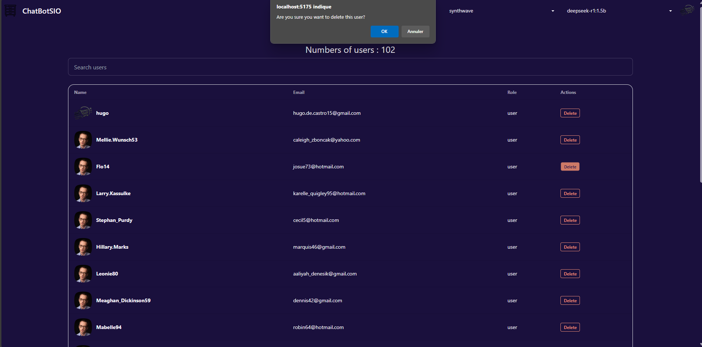

De Castro Hugo
ChatBotSIO
Création d'un chatbot conversationnel intelligent, capable de dialoguer avec l’utilisateur grâce à l’intelligence artificielle.Les technologies utilisées sont:
- TypeScript pour la logique et la fiabilité du code.
- Vue.js (framework JavaScript) pour construire une interface utilisateur réactive et fluide.
Ollama pour l’intégration de modèles d’IA capables de comprendre et générer des réponses naturelles. Les Fonctionnement du chatbot :
- L’utilisateur s’inscrit ou se connecte à une interface simple.
- Il peut ensuite envoyer un message dans une zone de chat.
- Le message est envoyé à une IA (via Ollama) qui analyse la question et génère une réponse pertinente en temps réel.
- Chaque échange est enregistré dans un historique, permettant de retrouver ses anciennes conversations.
Objectif et intérêt du projet :
- Répond à un besoin réel : créer une interface intuitive pour dialoguer avec une IA, comme ChatGPT.
- Permet de tester l’intégration d’IA dans une application web moderne.
- Met en pratique des compétences concrètes en développement web fullstack, en authentification sécurisée et en gestion de données utilisateur.
Voici la page de chat de base:
Le thème du chat de discussion est configurable depuis ce menu:
Ainsi que le modèle d'intelligence artificielle:
On a donc l'historique des anciennes conversations:
La possibilité de modifié plusieurs choses du profil:
La page de connexion:
La page d'inscription:
La page accessible en tant que admin qui liste les utilisateurs existant et peut les supprimer:
Avec le message de confirmation de suppression pour éviter toute erreur:
